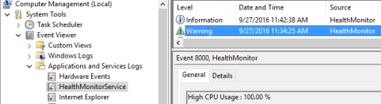

The common Health Monitor Service (HealthMonitorService.exe) is installed by all Adroit Technologies applications and it runs in the background and cannot be interacted with directly.
Its function is to monitor various significant values of the system (computer) on which these Adroit Technologies applications are running, since these both directly and indirectly affect their performance (their health), such as the CPU load monitoring.
This Health Monitor Service creates a Windows EventLog called “HealthMonitorService”, where it logs any related messages.

The Service will periodically check specific processes (every 30 seconds)
The default processes are "as.exe", "VIP Designer.exe", "VIP Operator.exe", "VIPServer.exe", "VIPService.exe". However you can add additional processes too - see below for details.
The following CPU usages are checked for each process:
If the Memory (Private Bytes) is more than 80% of 1146880000 bytes it gets flagged for higher resolution monitoring.
When a Process has been flagged for higher resolution monitoring, then it is checked every 10 seconds:
If necessary, you can add additional Processes to be monitored by the Health Monitor Service.
The configuration file resides in installation folder of the Health Monitor Service (typically found - C:\ProgramData\Adroit Technologies\Common\Health Monitor). The configuration file is called HealthMonitorConfig.xml
Example Configuration Entry to add the Notepad.exe process to the list of monitored processes, add the following to the end of this file, above the </NewDataSet> line:
<Executables>
<Executable>Notepad.exe</Executable>
<CPUCoreThresholdPercent>2</CPUCoreThresholdPercent>
<PrivateBytesLimit>1146880000</PrivateBytesLimit>
<PrivateBytesThresholdPercent>80</PrivateBytesThresholdPercent>
</Executables>
If necessary, you can adjust the default thresholds of the monitored processes to customise them for your typical system performance.
The configuration file resides in installation folder of the Health Monitor Service (typically found - C:\ProgramData\Adroit Technologies\Common\Health Monitor). The configuration file is called HealthMonitorConfig.xml
In this file, each specified executable allows you to specify the following thresholds, which specify the normal usage values, which if they are consistently exceeded indicates that there may be a problem and hence the Health Monitor Service will log messages in these instances: